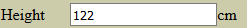

Forms
(Required modules: core,sql)
The first objective of the forms module is automated build of html forms and format sql queries. Although the sql query formatter is the part of the forms module the documentation is located under different page.
Note: The automated view/save/edit/delete of entities are achieved by Node module which is heavy based on this module.
The two main part of this page is:
- Pure html form generation with HtmlForm class (With HtmlFormFormatter classes)
- Automated html form building and database operations with SpeedForm and the data definition array of SpeedForm.
Simple HTML form generation
Let's see the generation of this easy form:
The corresponding html code:
<form method="POST" action="handlerurl" enctype="multipart/form-data">
<input type="text" name="city" value=""/>
<select name="size">
<option value="1">Small</option>
<option value="2">Medium</option>
<option value="3">Big</option>
</select>
<input type="checkbox" name="capital" />
<input type="submit" name="add" value="Add" />
</form>
You can generate this form with the following codes:
$f = new HtmlForm();
$f->action_post('handleurl');
$f->input('text','city','');
$f->select('select','size','',[
'1' => 'Small',
'2' => 'Medium',
'3' => 'Big',
]);
$f->input('checkbox','capital');
$f->input('submit','add','Add');
print $f->get();
The HtmlForm object stores every settings and data in it's internal sate.
As seen above the html generation is done by get() method.
The following functions can be used to define the form:
Definition methods of HtmlForm class:
- name($name)
- Set the name of the form object. This name is usually useless but can be used in
form_get_startandform_get_itemhooks where the hooks receives this name to distinguish forms.
- Set the name of the form object. This name is usually useless but can be used in
- opts($o)
- Sets some options of the generated form for example css style or html classes. The function should receive an associative array where the values can be:
"id"=stringthe id attribute of the form"class"=stringthe css class of the form"style"=stringthe style attribute of the form (Custom css code of the form)
- Sets some options of the generated form for example css style or html classes. The function should receive an associative array where the values can be:
- getId()
- Returns the ID attribute of the form if set. Otherwise empty string returned.
- set_formatter($formatter)
- Sets the output formatter class of the form which a
HtmlFormFormatterdescendant object. See form formatter part of this page.- This function can receive a formatter object which can embed the form into html table or div structure or other different html codes generated by the specified
HtmlFormFormatterdescendant object.
- This function can receive a formatter object which can embed the form into html table or div structure or other different html codes generated by the specified
- Sets the output formatter class of the form which a
- action_get($rawurl, array $query = [], array $urlopts = [])
- Sets the form action to "GET" and the target url to
$rawurl. The other parameters are passed to theurl()function. See the documentation ofurl()
- Sets the form action to "GET" and the target url to
- action_post($rawurl, array $query = [], array $urlopts = [])
- Sets the form action to "POST" and the target url to
$rawurl. The other parameters are passed to theurl()function. See the documentation ofurl()
- Sets the form action to "POST" and the target url to
- action_ajax($rawurl, array $query = [], array $urlopts = [])
- Sets the form action to AJAX and the target url to
$rawurl. The target url have to be an ajax handler. The response will processed by the CodKep's ajax framework. The other parameters are passed to theurl()function. See the documentation ofurl()
- Sets the form action to AJAX and the target url to
- action_ajaxcallback($target,array $query = [],array $urlopts = [])
- Sets the form action to AJAX and the target will be an autorouted user defined ajax callback function specified by
$targetparameter. The ajax handler callback function name has to start with "extcallable_" prefix becouse security considerations, see here. The response will processed by the CodKep's ajax framework. The other parameters are passed to theurl()function. See the documentation ofurl()
- Sets the form action to AJAX and the target will be an autorouted user defined ajax callback function specified by
- action_postcallback($target,array $query = [],array $urlopts = [])
- Sets the form action to "POST" and the target will be an autorouted user defined callback function specified by
$targetparameter. The callback function name has to start with "extcallable_" prefix becouse security considerations, see here. The other parameters are passed to theurl()function. See the documentation ofurl()
- Sets the form action to "POST" and the target will be an autorouted user defined callback function specified by
- input($type, $n, $v, array $opts = [])
- Adds an input tag to the form with type received in
$typeparameter.- The
$typeparameter can receive the following values:"text" "number" "password" "submit" "file"- These values are generates a single html input tag and the type parameter's value passed through to the input tag type."raw"- It does not generate html tags, the data is simply written to the output."checkbox"- It generates a html input tag with checkbox type and a second hidden input tag to handle false values.
- The
$nparameter is the name of the input tag. - The
$vparameter is the default value of the input tag. - The
$optsis an associative array can set some features of the field."class"=string- Sets the css class of the field."style"=string- Sets the css/style attribute of the field."onclick"=string- Sets the onclick attribute of the field."onchange"=string- Sets the onchange attribute of the field."id"=string- Sets the ID of the field."before"=string- Put this text before the tag."after"=string- Put this text after the tag."size"=number- Sets the size attribute of the field."maxlength"=number- Sets the maxlength attribute of the field."readonly"=true- Sets the field readonly."autofocus"=true- Sets the form item has the initial focus"lang"=text- Adds the "lang" attribute to the input tag to avoid locale specific number format problems."required"=true- Sets the html5 required and aria-required attribute. (The form handles the field as mandatory)"placeholder"=string- Add a placeholder value (value hint)"rawattributes"=string- Adds additional parameters to the html tag as raw string
- The
- Adds an input tag to the form with type received in
- text($name, $t, array $opts = [])
- Adds a simple text to the form (Not an input field, this is only a text to display)
- The
$nameparameter is the name of the item. (Not displayed) - The
$tparameter is the text to display - The
$optsis an associative array can set some features of the field."class"=string- Sets the css class of the field."style"=string- Sets the css/style attribute of the field."onclick"=string- Sets the onclick attribute of the field."id"=string- Sets the ID of the field."before"=string- Put this text before the tag."after"=string- Put this text after the tag."readonly"=true- Sets the field readonly.
- The
- Adds a simple text to the form (Not an input field, this is only a text to display)
- upload($n, $v, array $opts = [])
- Adds a file upload field to the form (This is an
input type="file"tag)- The
$nameparameter is the name of the field. - The
$vparameter is the default value of the input tag. (Leave it empty) - The
$optsis an associative array can set some features of the field."class"=string- Sets the css class of the field."style"=string- Sets the css/style attribute of the field."onclick"=string- Sets the onclick attribute of the field."id"=string- Sets the ID of the field."before"=string- Put this text before the tag."after"=string- Put this text after the tag."size"=number- Sets the size attribute of the field."maxlength"=number- Sets the maxlength attribute of the field."readonly"=true- Sets the field readonly.
- The
- Adds a file upload field to the form (This is an
- select($type, $n, $v, array $values = [], array $opts = [])
- Adds a select (dropdown), radio or optional select field to the form.
- The
$typeparameter can receive the following values:"select"- Generates a html select. (Dropdown select)"radio"- Generates a html radio buttons."optselect"- Generate an optional html select. (It can holds NULL value)
- The
$nameparameter is the name of the field. - The
$vparameter is the default value of the select. - The
$valuesparameter is an associative array holds the possible values of the select. The indexes are the keys, the values are the displayed texts. - The
$optsis an associative array can set some features of the field."class"=string- Sets the css class of the field."style"=string- Sets the css/style attribute of the field."onclick"=string- Sets the onclick attribute of the field."onchange"=string- Sets the onchange attribute of the field."id"=string- Sets the ID of the field."before"=string- Put this text before the tag."after"=string- Put this text after the tag."readonly"=true- Sets the field readonly."autofocus"=true- Sets the form item has the initial focus"itemprefix"=string- This string is written immediately before the item tags. Before the option tags in select mode and before the input and label tags in radio mode."itemsuffix"=string- This string is written immediately after the item tags. After the option tags in select mode and after the input and label tags in radio mode."itemlabelprefix"=string- This string is written before the label text ind radio mode."itemlabelsuffix"=string- This string is written after the label text ind radio mode."rawattributes"=string- Adds additional parameters to the html tag as raw string
- The
- Adds a select (dropdown), radio or optional select field to the form.
- textarea($n, $v, $row, $col, array $opts = [])
- Adds a textarea field to the form. (Large text editor field)
- The
$nameparameter is the name of the field. - The
$vparameter is the default value of the select. - The
$rowparameter is the row count (height) of the textarea tag. - The
$colparameter is the column count (width) of the textarea tag. - The
$optsis an associative array can set some features of the field."class"=string- Sets the css class of the field."style"=string- Sets the css/style attribute of the field."onclick"=string- Sets the onclick attribute of the field."onchange"=string- Sets the onchange attribute of the field."id"=string- Sets the ID of the field."before"=string- Put this text before the tag."after"=string- Put this text after the tag."readonly"=true- Sets the field readonly."softreadonly"=true- Disable input of textarea. (See the standard html textarea readonly attribute)"disablercsize"=true- Disable put row and col attributes to the textarea html tag."autofocus"=true- Sets the form item has the initial focus"required"=true- Sets the html5 required and aria-required attribute. (The form handles the field as mandatory)"placeholder"=string- Add a placeholder value (value hint)"rawattributes"=string- Adds additional parameters to the html tag as raw string
- The
- Adds a textarea field to the form. (Large text editor field)
- hidden($n, $v, array $opts = [])
- Adds a hidden field to the form (This is an
input type="hidden"tag)- The
$nameparameter is the name of the field. - The
$vparameter is the value of the field. - The
$optsis an associative array can set some features of the field."class"=string- Sets the css class of the field."style"=string- Sets the css/style attribute of the field."onclick"=string- Sets the onclick attribute of the field."id"=string- Sets the ID of the field."before"=string- Put this text before the tag."after"=string- Put this text after the tag.
- The
- Adds a hidden field to the form (This is an
- hidden_array(array $keyvalue, array $opts=[])
- Adds the parameter passed
$keyvalueassociative array every elements to the form as hidden fields. The keys of the array is the parameter names while the values act as hidden values. - The
$optsparameter is added for every fields and works same ashidden()method above.
- Adds the parameter passed
- datefield($type, $n, $v, array $opts = [])
- Adds a date typed field to the form. This will be a dropdown select for years, months and days.
- The parameter
$typeshould be"date"or"dateu"- The type
"date"means a simple date field with year, month and day selector. - The type
"dateu"means a date field which can accept the "unknown" state. This case an extra checkbox will put next to the date which represents the unknown value.
- The type
- The
$nameparameter is the name of the field. - The
$vparameter is the value of the field. - The
$optsis an associative array can set some features of the field."class"=string- Sets the css class of the field."style"=string- Sets the css/style attribute of the field."onclick"=string- Sets the onclick attribute of the field."id"=string- Sets the ID of the field."before"=string- Put this text before the tag."after"=string- Put this text after the tag.
- input_p($type, $n, $v, array $opts = [])
- Same as
input()method but define and query the previous set HTML parameter value through the CodKep parameter system. If the parameter which defined by this field is set, the form value will display the already set value. (The method is automatically define the requested parameter) - If the
$optsarray contains the'par_sec'index, the field will be defined by the valued security class instead of the type default in the CodKep parameter system. - If the
$optsarray contains an index'no_par_def'withtruevalue the parameter definition (with the par_def() function)is skipped. Use it if you already define the parameter before and only need to load the set value into the form. - If the
$optsarray contains an index'no_par_load'withtruevalue the parameter loading is skipped even if the value is received, and the original default value is used instead.
- Same as
- select_p($type, $n, $v, array $values = [], array $opts = [])
- Same as
select()method but define and query the previous set HTML parameter value through the CodKep parameter system. If the parameter which defined by this field is set, the form value will display the already set value. (The method is automatically define the requested parameter) - If the
$optsarray contains the'par_sec'index, the field will be defined by the valued security class instead of the type default in the CodKep parameter system. - If the
$optsarray contains an index'no_par_def'withtruevalue the parameter definition (with the par_def() function)is skipped. Use it if you already define the parameter before and only need to load the set value into the form. - If the
$optsarray contains an index'no_par_load'withtruevalue the parameter loading is skipped even if the value is received, and the original default value is used instead.
- Same as
- textarea_p($n, $v, $row, $col, array $opts = [])
- Same as
textarea()method but define and query the previous set HTML parameter value through the CodKep parameter system. If the parameter which defined by this field is set, the form value will display the already set value. (The method is automatically define the requested parameter) - If the
$optsarray contains the'par_sec'index, the field will be defined by the valued security class instead of the type default in the CodKep parameter system. - If the
$optsarray contains an index'no_par_def'withtruevalue the parameter definition (with the par_def() function)is skipped. Use it if you already define the parameter before and only need to load the set value into the form. - If the
$optsarray contains an index'no_par_load'withtruevalue the parameter loading is skipped even if the value is received, and the original default value is used instead.
- Same as
- datefield_p($type, $n, $v, array $opts = [])
- Same as
datefield()method but define and query the previous set HTML parameter value through the CodKep parameter system. If the parameter which defined by this field is set, the form value will display the already set value. (The method is automatically define the requested parameter) - If the
$optsarray contains the'par_sec'index, the field will be defined by the valued security class instead of the type default in the CodKep parameter system. - If the
$optsarray contains an index'no_par_def'withtruevalue the parameter definition (with the par_def() function)is skipped. Use it if you already define the parameter before and only need to load the set value into the form. - If the
$optsarray contains an index'no_par_load'withtruevalue the parameter loading is skipped even if the value is received, and the original default value is used instead.
- Same as
- custom($name, $value, callable $callback, array $opts = [])
- Adds a custom form element to the form with a user defined callback function to generate html codes.
- The
$nameparameter is the name of the from element. - The
$valueparameter is the value of the field.- Note: Your callback function receive this value in the "value" item of the $elementarray parameter
- The
$callbackparameter is the callback function which generates the html codes of the custom element.- The callback function should looks like the following way:
- my_custom_form_callback($formobject,$elementarray,$readonly)
- The
$formobjectparameter holds the whole form object where the element is generated. - The
$elementarrayparameter holds the options array of the custom made form element. This array holds every available information which passed from api side. (Holds name and value too.) - The
$readonlyparameter is true when readonly form should generate, otherwise is false.
- The
- The callback function should return the html codes of the custom made element. The "after" and "before" strings are concatenated, but the others like "class" or "id", etc should be handled by your custom codes.
- my_custom_form_callback($formobject,$elementarray,$readonly)
- The callback function should looks like the following way:
- The
$optsis an associative array can set some features of the field. This options below does not have any effect to the generated code. (Except before and after) Your callback will receive these values as parameter!"class"=string- Sets the css class of the field."style"=string- Sets the css/style attribute of the field."onclick"=string- Sets the onclick attribute of the field."onchange"=string- Sets the onchange attribute of the field."id"=string- Sets the ID of the field."before"=string- Put this text before the tag."after"=string- Put this text after the tag."size"=number- Sets the size attribute of the field."maxlength"=number- Sets the maxlength attribute of the field."readonly"=true- Sets the field readonly."autofocus"=true- Sets the form item has the initial focus"itemprefix"=string- This string is written immediately before the item tags."itemsuffix"=string- This string is written immediately after the item tags."required"=true- Sets the html5 required and aria-required attribute. (The form handles the field as mandatory)"placeholder"=string- Add a placeholder value (value hint)"rawattributes"=string- Adds additional parameters to the html tag as raw string
- The
- Adds a custom form element to the form with a user defined callback function to generate html codes.
- setCallback($name, callable $callback)
- You can add a named callback to the object and run it later with the given name. This callbacks can used as macros. This callback mechanism works same in HtmlTable,HtmlForm and ExcelXmlDocument. It possible to set different callbacks with same names to achieve different mechanism on same event.
- The callbacks receives two parameters:
- The object reference where the callback is set (HtmlTable,HtmlForm and ExcelXmlDocument)
- The optional parameter passed to
run()
- Example:
$t->setCallback("sep",function($x,$p) { $x->nrows(2); return ''; });
- run($name, $parameter = null)
- Calls the callback by name which set through
setCallback() - The
$parameteris an optional parameter passed directly to the callback - Example:
$t->run("sep");
- Calls the callback by name which set through
The code generation methods of HtmlForm class:
- get($readonly = false)
- Generate the html code of the whole form. The output of this function can directly printed to the clients. Calling this function is equivalent to call
get_start()get_p()get_end()sequentially.- If the
$readonlyparameter istruethe function generated a "readonly form". (The "readonly form" is technically not a html form but a simple table or div structure to display data)
- If the
- Generate the html code of the whole form. The output of this function can directly printed to the clients. Calling this function is equivalent to call
- get_start($readonly = false)
- Generates the html open tag of the form.
- If the
$readonlyparameter istruethe function generated a "readonly form".
- If the
- Generates the html open tag of the form.
- get_p($readonly = false)
- Generate the whole form inner codes without the form open and close tag.
- If the
$readonlyparameter istruethe function generated a "readonly form".
- If the
- Generate the whole form inner codes without the form open and close tag.
- get_end($readonly = false)
- Generate the html close tag of the form.
- If the
$readonlyparameter istruethe function generated a "readonly form".
- If the
- Generate the html close tag of the form.
- get_one($name,$readonly = false)
- Generate the html codes only for the specified form field.
- If the
$readonlyparameter istruethe function generated a "readonly form".
- If the
- Generate the html codes only for the specified form field.
- get_part($first, $last, $readonly = false)
- Generate the specified part of the form fields.
- The parameter
$firstspecify the name of the first field which generated by this call. - The parameter
$lastspecify the name of the last field which generated by this call. - If the
$readonlyparameter istruethe function generated a "readonly form".
- The parameter
- Generate the specified part of the form fields.
The HtmlForm object can receive a HtmlFormFormatter descendant object which can format/specify
the output mode of the form. You can write own form formatter class to display custom forms.
(Later the SpeedForm class will use it's own formatter to achieve the special functionalities)
Let's see an example of creating a custom form formatter putting everything into divs:
class MyFormatter extends HtmlFormFormatter
{
public function __construct()
{
$this->name = 'MyFormatter';
}
function begin_form($txt)
{
return '<div class="myform-whole">'.$txt;
}
function end_form($txt)
{
return $txt.'</div>';
}
function item($txt,$name)
{
return '<div class="myformitem-'.$name.'">'.$txt.'</div>';
}
}
You can set this form formatter to arbitrary form:
$f = new HtmlForm('myfirstform');
...
$f->set_formatter(new MyFormatter());
...
print $f->get();
Hint: How to arrange HtmlForm fields by html table without form formatter
$f = new HtmlForm();
$f->action_post(current_loc());
$f->hidden('somehiddenval',$hval);
$f->text('tb','<table border="1">');
$f->text('l1','<tr><td>Data One</td>');
$f->input('text','name','',['before' => '<td>', 'after' => '</td></tr>']);
$f->text('l2','<tr><td>Data Two</td>');
$f->textarea('descr','',3,30,['before' => '<td>','after' => '</td></tr>']);
$f->text('l3','<tr><td>Data Three</td>');
$f->datefield('date','start',date('Y-m-d'),['before' => '<td>','after' => '</td></tr>']);
$f->text('te','</table>');
$f->input('submit','dosave','Save item');
print $f->get();
This code above generates a form looks like this way:
Form checker method
The HtmlForm class automatically appends a hidden value to the form which is regularly change. It's recommended to check this values in case of parameter loading to make harder to do CSRF attacks.
form_source_check($disable_auto_redirect = false)
Check the form source value through the CodKep's parameter system and do automatic redirection
to an error location if difference detected.
- You can disable the automatic redirection by set
$disable_auto_redirectparameter totrue. This case you can check the return value of the function, which istrueif malicious activity detected.
Note: The SpeedForm do this check automatically on parameter load.
The SpeedForm
There is a more versatile form generation class which can build more styled forms and can handle sql operations too.
This class is the SpeedForm. The SpeedForm improve the functionality of HtmlForm.
The SpeedForm connects the HTML side data with the database backend, and handle both together. The SpeedForm is a html form from the html side. While from database side it represents a record of an sql table.
You have to define a complex data definition structure when creating a SpeedForm.
This definition structure can specify the field names, database related features, the look & feel,
form customisations, data validations and everything which needed to build and use a complex form.
This data definition structure is a big associative array, which have to passed to the constructor of SpeedForm.
You can write it by hand or build with SpeedForm builder.
The documentation is located under different chapter.
The SpeedForm contains fields, and the fields have a type which specify both the html side appearance
and the database types/features.
The main goal of the data definition structure to specify this fields.
There is an important expectation of SpeedForm is that a key typed field is mandatory, you always have to define one.
(It's can be a keyn or keys type in SpeedForm)
The SpeedForm object can achieve the following main operations:
- Build HtmlForm object (Which can directly generate html codes)
- Query and get the values from the database and store it's internal state.
- Load html POST/GET parameter through CodKep's parameter system.
- Validate the loaded values with various checks.
- Save/Update or Add/Insert the values to the database.
- Generate query/select/update/insert SQL command strings.
Simple example of using SpeedForm (it's only show an empty form):
// $def is contains the data definition, see next code block below
$sf = new SpeedForm($def);
$form = $sf->generate_form('update'); //Generating a HtmlFrom object
$form->action_post('formsubmitlocation'); //Set the handle url of the form
print $form->get(); //Generate & print the concrete html codes
This code above can show a complete styled form looks like this way:
The definition structure of this form is the following (It was built by SpeedForm builder):
$def =
[
"name" => "people_spec",
"table" => "people",
"show" => "table",
"color" => "#88ff88",
"fields" => [
10 => [
"sql" => "uid",
"type" => "keyn",
"text" => "Identifier",
],
20 => [
"sql" => "name",
"type" => "smalltext",
"text" => "Name",
"color" => "#44cc44",
],
30 => [
"sql" => "birth",
"type" => "date",
"text" => "Birthdate",
],
40 => [
"sql" => "sex",
"type" => "txtradio",
"text" => "Gender",
"color" => "#f8f888",
"values" => [
"m" => "Male",
"f" => "Female",
],
],
50 => [
"sql" => "hair",
"text" => "Hair color",
"type" => "txtselect",
"optional" => "yes",
"values" => [
"b" => "Brown",
"l" => "Blonde",
"e" => "Black",
"r" => "Red",
"o" => "Other",
],
"default" => "b",
],
60 => [
"sql" => "note",
"type" => "largetext",
"text" => "Note",
"col" => 30,
"row" => 3,
],
70 => [
"sql" => "active",
"text" => "Account activated",
"type" => "check",
"default" => true,
"suffix" => "yes",
],
80 => [
"sql" => "add_btn",
'in_mode' => 'insert',
"type" => "submit",
"default" => 'Add',
"centered" => true,
],
90 => [
"sql" => "save_btn",
'in_mode' => 'update',
"type" => "submit",
"default" => 'Save',
"centered" => true,
],
],
];
Methods of SpeedForm
- SpeedForm($definition) (The is the
__constructfunction)- The parameter is an associative array which is the data definition structure documented here.
- index_of($sql)
- Returns the index of the field matched with the name passed in parameter. (Match with "sql" property under the field definition)
- get_key_name()
- Returns the sql name of the (first)field which has the "key" type (
keysorkeyn).
- Returns the sql name of the (first)field which has the "key" type (
- get_key()
- Returns the internal stored value of the key field. (See
get_key_name())
- Returns the internal stored value of the key field. (See
- get_key_sqlvalue($strip = false)
- Returns the value of the key field which is directly usable in sql commands. (Contains apostrophes if needed)
- If the
$stripparameter istruethe value can placed insql_execparameter array, otherwise can usable embed in command string.
- If the
- Returns the value of the key field which is directly usable in sql commands. (Contains apostrophes if needed)
- set_key($v)
- Sets the value of the key field. (See
get_key_name()) It's only set the key value in the SpeedForm internal state not the database.- The parameter
$vis the value to set.
- The parameter
- Sets the value of the key field. (See
- &get_field($sql)
- Returns a reference of the parameter specified field definition part.
- get_value($sql)
- Returns the value of the field which name is specified in
$sqlparameter.
- Returns the value of the field which name is specified in
- get_display_value($sql)
- Returns the display value of the field which name is specified in
$sqlparameter. - You can always get the value of a field by
get_value()function but some fields (like the txtselect, numselect, sqlchoose) holds a key value not the display value referenced by the key. You can get the desired display value with this function. Most cases (like field type smalltext and largetext) this function directly pass the value.
- Returns the display value of the field which name is specified in
- get_display_for_external_value($sql,$value)
- Returns the display value of the field which name is specified in
$sqlparameter for the passed value.
- Returns the display value of the field which name is specified in
- set_value($sql,$value)
- Sets the value of the specified field to
$value. The$sqlis the name of the field to set.
- Sets the value of the specified field to
- function in_action($action = 'submit')
- Determines if the current page load have POST/GET parameters submitted by this form previously. If yes returns
trueotherwisefalse.- You can use this function to determine if the parameter specified operation is in progress. According to this the parameter can be the following strings:
"submit"- Any kind of submit operation is in progress"insert"- An insert/add operation is in progress"update"- An update/save operation is in progress"delete"- A delete operation is in progress"select"- A select/query operation is in progress
- You can use this function to determine if the parameter specified operation is in progress. According to this the parameter can be the following strings:
- Determines if the current page load have POST/GET parameters submitted by this form previously. If yes returns
- in_specified_action($sql)
- Determines if the current page load have the specified POST/GET parameter submitted by this form previously.
- Parameter
$sqlthe sql name of the field to test.
- Parameter
- Determines if the current page load have the specified POST/GET parameter submitted by this form previously.
- load_parameters()
- Reads the defined GET/POST parameters through the CodKep's parameter system and set the values into the internal state.
- Some fields needs to load later (after validating) because the loading of the field implicate sql changes in the system. For example a file loading implicate the creating of file record in CodKep file system. To avoid dead/orphan changes in case of a validation error of an another field, this kind of loading done in
load_parameters_deferredautomatically. It does not need to call deferred loading, it's done automatically before sql create or update string generation if the normal load_parameters is called. Consequence of these some value can be not really loaded before sql command generation. For example an uploaded file's value can be "deferred_new_ufi" in this phase.
- load_values($vals)
- Load the field values from a parameter passed array. The
$valsparameter should be an associative array where the indexes are the field names.
- Load the field values from a parameter passed array. The
- generate_form($mode='all',$tablename='')
- This function generates and returns a fully set
HtmlFormobject (with the specialHtmlFormFormatterobject set) which can generates necessary the html codes of the form. The shortest method is to call->get()on this returned object. See documentation of HtmlForm.- You have to specify the desired action achieved by form in
$modeparameter.- The possible values are
'all','select','insert','update','delete'.
- The possible values are
- The correctly set
$modeparameter is essential to work field skipping mechanism (See skip table) and "in_mode" field attribute for submit fields.
- You have to specify the desired action achieved by form in
- This function generates and returns a fully set
- do_select()
- Perform an SQL query (SELECT) and reads the results into the internal state of SpeedForm. The key field's value has to set to perform this query. Use
set_key($v)function to do this.
- Perform an SQL query (SELECT) and reads the results into the internal state of SpeedForm. The key field's value has to set to perform this query. Use
- do_insert($disable_checks = false)
- Perform an SQL insert to store the values holds in internal state into the database.
- If the
$disable_checksparameter istruethedo_insertwon't run the data validation before the operation.
- If the
- The function returns the key of the inserted record.
- Perform an SQL insert to store the values holds in internal state into the database.
- do_update($disable_checks = false)
- Perform an SQL update to save the values holds in internal state into the database.
- If the
$disable_checksparameter istruethedo_updatewon't run the data validation and form expiry checks before the operation.
- If the
- Perform an SQL update to save the values holds in internal state into the database.
- do_create()
- Creates the SQL table in the database.
- do_validate($mode,$auto_handle=true)
- Perform data validation check on values present in the internal state. The
do_update(),do_insert()functions are automatically do this before save. This function marks the fields which not pass the checks so that bad fields is highlighted to the user if the form is generated after this validation check. To utilize this you have to disable the automatic error redirection, see the$auto_handleparameter.- Returns zero if every test passed or
1if some field does not pass the test. In case of1returned you can read theSpeedFormobject'svalidate_errortextattribute which contains an error text which describe the reasons. - If
$auto_handleparameter istrue(default) the do_validate function perform an automatic redirection to an error page in case of non valid data found and shows the error describe text. (On that redirected error page)
- Returns zero if every test passed or
- You have to specify the desired operation in
$modeparameter by setting "insert","update" or "delete". If you miss specification of this parameter you will get an exception. You have to specify this because the field skipping logic, need to do if we need to skip or check the actual field. (See skip table)
- Perform data validation check on values present in the internal state. The
- do_expirity_check($auto_handle=true)
- Do a form expiry check. The
do_update()function are automatically do this before save. - The expiry check only works if a
timestamp_modtyped field is exists. - The expiry check: When the SpeedForm first time read the values from the database, the timestamp field is also read and put to the form as hidden parameter. Immediately before the save event the CodKep will re-read this timestamp from database and compares with the one received as parameter. If the two values are differs it means that somebody modified the database value meanwhile, so a "form expired" error message will popped up, and the update is blocked to save the meanwhile stored data.
- Return values:
0- Check done, It doesn't require refresh.1- Check indicates the form is expired.2- Error, Could not run the check
- Do a form expiry check. The
- clean_before_delete()
- This function removes every file referenced by the SpeedForm's internal state in case the
ondelete=keepattribute is not set. Useful run before delete of the record.
- This function removes every file referenced by the SpeedForm's internal state in case the
- sql_select_string($tablename='')
- It generates the SQL query/select string. The parameters are embedded to the string.
- sql_select_string_PQ($tablename='')
- sql_select_string_PA($tablename='')
- It generates the SQL query/select string with parameter placeholders and the parameter substitutes array.
- The
sql_select_string_PQgenerates the command string with placeholders while thesql_select_string_PAgenerates the substitutes array. - Sample:
sql_exec( $sf->sql_select_string_PQ() , $sf->sql_select_string_PA() );
- sql_update_string($tablename='')
- It generates the SQL update string. The parameters are embedded to the string.
- The parameter
$tablenamecan restrict the fields to that ones which located in parameter passed database table.
- The parameter
- It generates the SQL update string. The parameters are embedded to the string.
- sql_update_string_PQ($tablename='')
- sql_update_string_PA($tablename='')
- It generates the SQL update string with parameter placeholders and the parameter substitutes array.
- The parameter
$tablenamecan restrict the fields to that ones which located in parameter passed database table.
- The parameter
- The
sql_update_string_PQgenerates the command string with placeholders while thesql_update_string_PAgenerates the substitutes array. - Sample:
sql_exec( $sf->sql_update_string_PQ() , $sf->sql_update_string_PA() );
- It generates the SQL update string with parameter placeholders and the parameter substitutes array.
- sql_insert_string($tablename='',array $extra = [])
- It generates the SQL insert string. The parameters are embedded to the string.
- The parameter
$tablenamecan restrict the fields to that ones which located in parameter passed database table. - If the parameter
$extrais a not empty array, the function adds the array index - value pairs to the SQL insert string. (The value will put directly to the VALUES part not through the sql query parameter system. It means that you can write function names here and/or must put string sign to the value in case of string value is passed)
- The parameter
- It generates the SQL insert string. The parameters are embedded to the string.
- sql_insert_string_PQ($tablename='',array $extra = [])
- sql_insert_string_PA($tablename='',array $extra = [])
- It generates the SQL insert string with parameter placeholders and the parameter substitutes array.
- The parameter
$tablenamecan restrict the fields to that ones which located in parameter passed database table. - If the parameter
$extrais a not empty array, the function adds the array index - value pairs to the SQL insert string. (The value will put directly to the VALUES part not through the sql query parameter system. It means that you can write function names here and/or must put string sign to the value in case of string value is passed)
- The parameter
- The
sql_insert_string_PQgenerates the command string with placeholders while thesql_insert_string_PAgenerates the substitutes array. - Sample:
sql_exec( $sf->sql_insert_string_PQ() , $sf->sql_insert_string_PA() );
- It generates the SQL insert string with parameter placeholders and the parameter substitutes array.
- sql_create_string()
- It generates the SQL create table string.
- sql_create_schema()
- It creates a special create schema array which can used in
HOOK_required_sql_schemahook. Read sql schema requirements documentation.
- It creates a special create schema array which can used in
Let's see some real word example which uses SpeedForm in various situations.
- Adds a new item page:
function addform_page()
{
$d = get_data_definition();
$sf = new SpeedForm($d);
if($sf->in_action('insert')) //If the user click on "Add" button
{
$sf->load_parameters(); //Load values as POST parameters
$sf->do_insert(); //Validate & Save its to the database
return 'The item is inserted';
}
$form = $sf->generate_form('insert'); //Generate an empty "insert" form
$form->action_post(current_loc()); //Set the handler to this page callback
ob_start();
print $form->get(); //Generate the html codes of the form
return ob_get_clean();
}
- View & edit an existing record where the key is received as parameter "id" :
function editform_page()
{
$d = get_data_definition();
par_def('id','number0'); //define the "id" parameter
$id = par('id'); //get the value of "id" parameter
$sf = new SpeedForm($d);
$sf->set_key($id); // Set the key of the item to edit
if($sf->in_action('update')) //If the user click on "Save" button
{
$sf->load_parameters(); //Load values as POST parameters
$sf->do_update(); //Validate & Save its to the database
print 'The item is SAVED!<br/>';
//You can optionally return here or run load_loc('somewhere');
// ...without that we will stay here and display the saved form again
}
$sf->do_select(); //Query the "old" values from the database
$form = $sf->generate_form('update');
$form->hidden('id',$id); //Add the key value to the form as hidden parameter
$form->action_post(current_loc()); //Set the handler to this page callback
ob_start();
print $form->get(); //Generate the html codes of the form
return ob_get_clean();
}
- Adds a new item with validation. If the validation is failed the form is printed back to the user and the fields which does not pass the validation are highlighted:
function addform_page()
{
$d = get_data_definition();
$sf = new SpeedForm($d);
if($sf->in_action('insert')) //If the user click on "Add" button
{
$sf->load_parameters(); //Load values as POST parameters
if($sf->do_validate(false))
{
// Validation failed: We print out the validation error text,
// but does not stop the execution here because
// the form generation will use this validation highlights
// to sign the bad data
print '<pre>'.$sf->validate_errortext.'</pre>';
print '</br>';
}
else
{
$sf->do_insert(); //Validate & Save its to the database
return 'The item is inserted';
//You can optionally return here or run load_loc('somewhere');
}
}
$form = $sf->generate_form('insert'); //Generate an empty "insert" form
$form->action_post(current_loc()); //Set the handler to this page callback
ob_start();
print $form->get(); //Generate the html codes of the form
return ob_get_clean();
}
Note: The highlighting is signed by a big red border, but can be changed to something else
by using CSS class validation_highlighted.
Data definition structure
The data definition array is php associative array structure to driven SpeedForm object features, specify fields, data validators, look and feel, and other features of the generated form or database values.
You can write this data definition structure by hand or you can use a builder page built-in CodKep. This builder page is called SpeedForm builder and located under speedformbuilder url.
The SpeedForm builder is disabled by default.
You have to set $site_config->enable_speeformbuilder=true to use the builder page and even
set $site_config->enable_speeformbuilder_preview=true to use preview
function in site settings.
This is a full javascript builder so does not modify anything on server side. You have to copy out the final result and insert into your code to use it.
The structure : Top level attributes
- Top level attributes
- Name of the definition
- Base definition (if this node is derived from another)
- Features of the whole form
- Associated sql table
"fields" =>- Contains array items each is a single field where the indexes are numbers.
- Single field definition array contains mandatory and optional elements.
- Name of the field
- Type of the field
- Other features of field
- Single field definition array contains mandatory and optional elements.
- Contains array items each is a single field where the indexes are numbers.
List of top level attributes/features:
| Index name | Description | Necessity | Value |
|---|---|---|---|
name | Identifier name of the form object. It will be used in classes names, hooks. | Mandatory | string |
table | The SQL table name in the database | Mandatory | sql table name |
sql_schema_bypass | If this field is present and true, the SQL definition of this data definition structure is kipped by sql schema editor | Optional | true or false(default) |
show | The formatter mode of the form. Html table or divs. Read details here. | Mandatory | "table" or "div" |
fields | Definition of data fields itself | Mandatory | definition of fields |
classname | In case you specify a node type you can tell a php class name here. If you do this, all this typed node object will be created with the specified class. You have to reach many customisation of node type this way. See the specific node documentation here. | Optional | php class name (Subclass of Node) |
base | You can use the definition structure of another node as a base to the current defined one. This way you can inherit the options and features of another node which can overwrite here. This base value holds the node name of the base node. | Optional | node name |
fields-by-sql | If the base value is set (which means the current definition is derived from another) you can set an associative array here to modify fields by the sql name. This field is a helper field which enables you to modify a derived field without knowing the index of the field. This associative array is similar to fields where the indexes are not numbers but sql names. | Optional | an associative array |
rest_enabled | This option is necessary to enable the automatic REST API interface for this node type. You can write combinations of lowercase letters here to enable main functions. "c" - enable create, "r" - enable read, "u" - enable update, "d" - enable delete, "l" - enable list. You should type "crudl" here to enable all functions or leave blank to disable all. | Optional | String with lowercase cars: "c","r","u","d","l" |
access_earlyblock | If this value is true the system will block the first phase (loading to view) of a node before the a not permitted update/insert/delete request. Otherwise only the not permitted action is blocked which means that possible to edit the form of the node and cannot save if denied. | Optional | true or false(default) |
access_loadp_before_create_perm | If this value is true the node create page will load the html parameters before the node_access check is executed. It means that you can use the user input data to determine the create permissions in hook_node_access. Otherwise the permission check is precede the parameter load. | Optional | true or false(default) |
access_loadp_before_update_perm | If this value is true the node edit page will load the html parameters before the node_access check is executed. It means that you can use the user input data to determine the edit permissions in hook_node_access. Otherwise the permission check is precede the parameter load. | Optional | true or false(default) |
view_callback | In case you specify a node type you can tell a php function name here to redirect the standard view of node to the given function | Optional | php function name |
view_phpfile | In case you specify a node type you can tell a php file name here to redirect the standard view of the node to the given php file | Optional | php file name |
form_script | You can put arbitrary javascript codes after the form if you set this value. | Optional | javascript codes |
javascript_files | You can specify an array of javascript files which are automatically load with the form | Optional | array of filepaths |
css_files | You can specify an array of css files which are automatically load with the form | Optional | array of filepaths |
color | The background color of the entire table (Each field can redefine it.) | Optional | A html color code. Example: #aa8888 |
before | This text is printed before the whole form | Optional | string (Can contains html codes) |
after | This text is printed after the whole form | Optional | string (Can contains html codes) |
table_class | The CSS class of the generated html table (If show=table) | Optional | string |
table_style | The "style" attribute of the generated html table (If show=table) | Optional | string |
table_border | The "border" attribute of the generated html table (If show=table) | Optional | string |
div_class | The CSS class of the form's main div (If show=div) | Optional | string |
div_c_afterv | Put an empty "clear:both;" css styled div block after the value's div (If show=div) | Optional | true or false |
div_c_afterl | Put an empty "clear:both;" css styled div block after the data block's div (line) (If show=div) | Optional | true or false |
collapsable_fieldsets | Enable collapsable fieldsets. (Injects required javascript codes) (If show=div) | Optional | true or false |
default_csstop_class | The default css top class. If you change this, the default css styles won't affect the area. (Value is: f_gendiv_defaultcodkepstyle) (If show=div) | Optional | string |
Sample of top level attributes:
$d = [
"name" => "people_spec",
"table" => "people",
"show" => "table",
"color" => "#88ff88",
"fields" => [
...
],
];
Field types
- Top level attributes
- Name of the definition
- Base definition (if this node is derived from another)
- Features of the whole form
- Associated sql table
"fields" =>- Contains array items each is a single field where the indexes are numbers.
- Single field definition array contains mandatory and optional elements.
- Name of the field
- Type of the field
- Other features of field
- Single field definition array contains mandatory and optional elements.
- Contains array items each is a single field where the indexes are numbers.
Following field types exists in CodKep (May be extend by hooks)
| Type name | Form appearance | Database |
|---|---|---|
| keyn | Static text | SERIAL |
| keys | Static text | VARCHAR UNIQUE |
| smalltext |  | VARCHAR |
| number |  | NUMERIC |
| largetext | LONGTEXT/TEXT | |
| txtselect | (If optional=yes)(If optional=yes) | VARCHAR |
| numselect | (If optional=yes)(If optional=yes) | NUMERIC |
| float | NUMERIC(15,5) | |
| password | VARCHAR | |
| static | ||
| rotext | VARCHAR | |
| txtselect_intrange | VARCHAR | |
| numselect_intrange | NUMERIC | |
| txtradio | VARCHAR | |
| numradio | NUMERIC | |
| check | BOOLEAN | |
| date | DATE NOT NULL | |
| dateu | DATE | |
| timestamp_create | Static text | TIMESTAMP |
| timestamp_mod | Static text | TIMESTAMP |
| creating_user | Static text | VARCHAR |
| modifier_user | Static text | VARCHAR |
| sqlnchoose | (If optional=yes)(If optional=yes) | NUMERIC |
| sqlschoose | (If optional=yes)(If optional=yes) | VARCHAR |
| file | The filename and the browse button | NUMERIC (CodKep ufi) |
| submit |
keyn
This field is the primary key of the sql table which identifies the record.
(Numeric variant) You can hide this field, if not a simple text
will show in form. The set_key() function change the value of this field.
| Form appearance: | Static text |
| Database type: | SERIAL |
| Index name | Necessity | Description | Value |
|---|---|---|---|
type | Mandatory | The type specification string | "keyn" |
sql | Mandatory | The name of the sql row holds this data field + The identifier of the data field | string |
text | Optional | The describe text of the field. This will be displayed to the user in forms | string |
default | Optional | The value is show before the user will send the form | string |
link | Optional | Makes clickable html link from the key. | string where the "<key>" token is replaced to the key value |
sql_sequence_name | Optional | Some database system does not return correct value after insert with PDO::lastInsertId() when the key is generated by a sequence (Pgsql). That case you have to put the sequence name here to determine which sequence provides the generated key. | string |
mysql_sql_sequence_name | Optional | Same as sql_sequence_name but only works when the database server is mysql. | string |
pgsql_sql_sequence_name | Optional | Same as sql_sequence_name but only works when the database server is pgsql. | string |
You can use more attributes here which are common and usable in all field definitions.
A sample definition of this kind of field:
10 => [
"sql" => "id",
"type" => "keyn",
"text" => "Identifier",
"hide" => true,
],
See all field types...
keys
This field is the primary key of the sql table which identifies the record.
(Varchar variant) You can hide this field, if not a simple text
will show in form. The set_key() function change the value of this field.
Note: Some databases like postresql can achieve the automatic key value generation with sequences.
This case it's recommended to set sql_sequence_name attribute to that sequence name to work codes properly.
| Form appearance: | Static text |
| Database type: | VARCHAR UNIQUE |
| Index name | Necessity | Description | Value |
|---|---|---|---|
type | Mandatory | The type specification string | "keys" |
sql | Mandatory | The name of the sql row holds this data field + The identifier of the data field | string |
text | Optional | The describe text of the field. This will be displayed to the user in forms | string |
default | Optional | The value is show before the user will send the form | string |
link | Optional | Makes clickable html link from the key. | string where the "<key>" token is replaced to the key value |
sql_sequence_name | Optional | Some database system does not return correct value after insert with PDO::lastInsertId() when the key is generated by a sequence (Pgsql). That case you have to put the sequence name here and may use keyprefix,keysuffix options to determine the generated key. | string |
mysql_sql_sequence_name | Optional | Same as sql_sequence_name but only works when the database server is mysql. | string |
pgsql_sql_sequence_name | Optional | Same as sql_sequence_name but only works when the database server is pgsql. | string |
keyprefix | Optional | This text will be automatically prepended to the sql sequence generated number returned by PDO::lastInsertId() Only use if you have special id field. | string |
keysuffix | Optional | This text will be automatically appended to the sql sequence generated number returned by PDO::lastInsertId() Only use if you have special id field. | string |
You can use more attributes here which are common and usable in all field definitions.
A sample definition of this kind of field:
10 => [
"sql" => "mid",
"type" => "keys",
"text" => "Identifier",
"color" => "#ff8888",
"centered" => "yes",
"sql_sequence_name" => "mtab_seq", // useful on postresql where the keys
// are generated with a sequence
],
See all field types...
smalltext
This is a simple one lined text field, can hold names email addresses and many other textual data.
Hint: You can use regex to validate input data
| Form appearance: | |
| Database type: | VARCHAR |
| Index name | Necessity | Description | Value |
|---|---|---|---|
type | Mandatory | The type specification string | "smalltext" |
sql | Mandatory | The name of the sql row holds this data field + The identifier of the data field | string |
text | Optional | The describe text of the field. This will be displayed to the user in forms | string |
default | Optional | The default value of this field | string |
You can use more attributes here which are common and usable in all field definitions.
A sample definition of this kind of field:
11 => [
"sql" => "name",
"type" => "smalltext",
"text" => "Name",
"par_sec" => "text5",
"check_noempty" => "Do not leave it empty",
"form_options" => [
'size' => 30,
],
"check_regex" => [
'/\s/' => "Have to contains a space",
'/^\p{Lu}/' => "Have to start with uppercase letter",
],
],
See all field types...
number
This field is an integer number field appears as single line edit in form.
| Form appearance: | |
| Database type: | NUMERIC |
| Index name | Necessity | Description | Value |
|---|---|---|---|
type | Mandatory | The type specification string | "number" |
sql | Mandatory | The name of the sql row holds this data field + The identifier of the data field | string |
text | Optional | The describe text of the field. This will be displayed to the user in forms | string |
default | Optional | The default value of this field | integer |
minimum | Opt.Validator | The minimum value of the field (user input validator) | integer |
maximum | Opt.Validator | The maximum value of the field (user input validator) | integer |
You can use more attributes here which are common and usable in all field definitions.
A sample definition of this kind of field:
20 => [
"sql" => "length",
"text" => "Length",
"type" => "number",
"default" => "55",
"suffix" => "cm",
"color" => "#aaaacc",
],
See all field types...
largetext
This field is a large text edit area with adjustable edit area size. On the database side it's an unlimited data field. You can even attach CKEditor (with css classes) to create html content.
| Form appearance: | |
| Database type: | LONGTEXT/TEXT |
| Index name | Necessity | Description | Value |
|---|---|---|---|
type | Mandatory | The type specification string | "largetext" |
sql | Mandatory | The name of the sql row holds this data field + The identifier of the data field | string |
text | Optional | The describe text of the field. This will be displayed to the user in forms | string |
default | Optional | The default value of this field | string |
row | Mandatory | Specifies the row number of the html textarea box | integer |
col | Mandatory | Specifies the column number of the html textarea box | integer |
You can use more attributes here which are common and usable in all field definitions.
A sample definition of this kind of field:
30 => [
"sql" => "note",
"text" => "Note",
"type" => "largetext",
"col" => 50,
"row" => 6,
"par_sec" => "free", // caution: only enable if necessary!
"form_options" => [
"class" => "use-ck",
],
],
See all field types...
txtselect
This field is a frequent used select input with fix key-value pairs, where the database store one of the selected textual keys. You can set the selection to "optional". If set the user can select "nothing" between the values. This case the database will contains NULL value.
| Form appearance: | (If optional=yes)(If optional=yes) |
| Database type: | VARCHAR |
| Index name | Necessity | Description | Value |
|---|---|---|---|
type | Mandatory | The type specification string | "txtselect" |
sql | Mandatory | The name of the sql row holds this data field + The identifier of the data field | string |
text | Optional | The describe text of the field. This will be displayed to the user in forms | string |
default | Optional | The default value of this field | one of key of the possible keys |
values | Mandatory | The possible values of the field | An associative array of keys and values |
optional | Optional | If the optional = "yes" is set the field can accept empty value. The user can reset the value with a button. This case the sql value will NULL. Otherwise only a select box will appears so the user have to select a value. | "yes" or "no" |
You can use more attributes here which are common and usable in all field definitions.
A sample definition of this kind of field:
40 => [
"sql" => "hairc",
"type" => "txtselect",
"text" => "Hair color",
"optional" => "yes", //You can choose "nothing", that case the database value is NULL
"values" => [
"b" => "Brown",
"l" => "Blonde",
"e" => "Black",
"r" => "Red",
"o" => "Other",
],
"default" => "b",
],
See all field types...
numselect
This field is a frequent used select input with fix key-value pairs, where the database store one of the selected integer keys. You can set the selection to "optional". If set the user can select "nothing" between the values. This case the database will contains NULL value.
| Form appearance: | (If optional=yes)(If optional=yes) |
| Database type: | NUMERIC |
| Index name | Necessity | Description | Value |
|---|---|---|---|
type | Mandatory | The type specification string | "numselect" |
sql | Mandatory | The name of the sql row holds this data field + The identifier of the data field | string |
text | Optional | The describe text of the field. This will be displayed to the user in forms | string |
default | Optional | The default value of this field | one integer of key of the possible keys |
values | Mandatory | The possible values of the field | An associative array of keys and values |
optional | Optional | If the optional = "yes" is set the field can accept empty value. The user can reset the value with a button. This case the sql value will NULL. Otherwise only a select box will appears so the user have to select a value. | "yes" or "no" |
You can use more attributes here which are common and usable in all field definitions.
A sample definition of this kind of field:
41 => [
"sql" => "car",
"text" => "Car",
"type" => "numselect",
"color" => "#aaaaff",
"values" => [
1 => "Suzuki",
2 => "Mitsubishi",
3 => "Volkswagen",
4 => "Ford",
],
"default" => '2',
"form_options" => [
"class" => "selulize",
"id" => "cselect",
],
],
See all field types...
float
This field contains numeric value.
| Form appearance: | |
| Database type: | NUMERIC(15,5) |
| Index name | Necessity | Description | Value |
|---|---|---|---|
type | Mandatory | The type specification string | "float" |
sql | Mandatory | The name of the sql row holds this data field + The identifier of the data field | string |
text | Optional | The describe text of the field. This will be displayed to the user in forms | string |
default | Optional | The default value of this field | string |
minimum | Opt.Validator | The minimum value of the field (user input validator) | integer |
maximum | Opt.Validator | The maximum value of the field (user input validator) | integer |
You can use more attributes here which are common and usable in all field definitions.
A sample definition of this kind of field:
50 => [
"sql" => "height",
"text" => "Height",
"type" => "float",
"default" => "1.78",
"suffix" => "m",
"maximum" => "0.5",
"minimum" => "2.5",
],
See all field types...
password
This field is similar to simple text field (smalltext) but the entered characters displayed as dots.
| Form appearance: | |
| Database type: | VARCHAR |
| Index name | Necessity | Description | Value |
|---|---|---|---|
type | Mandatory | The type specification string | "password" |
sql | Mandatory | The name of the sql row holds this data field + The identifier of the data field | string |
text | Optional | The describe text of the field. This will be displayed to the user in forms | string |
default | Optional | The default value of this field | string |
You can use more attributes here which are common and usable in all field definitions.
A sample definition of this kind of field:
60 => [
"sql" => "pwd",
"text" => "Password",
"type" => "password",
"color" => "#ff9999",
"form_options" => [
"maxlength" => 50,
"size" => 30,
],
"converter" => "pwd_scatter_func",
],
See all field types...
static
This field is a static text which not present in SQL. You can use it to make titles, separators or other visual elements in the form.
| Form appearance: | |
| Database type: | None |
| Index name | Necessity | Description | Value |
|---|---|---|---|
type | Mandatory | The type specification string | "static" |
sql | Mandatory | The name of the sql row holds this data field + The identifier of the data field | string |
text | Optional | The describe text of the field. This will be displayed to the user in forms | string |
default | Optional | The value of this field | string |
You can use more attributes here which are common and usable in all field definitions.
A sample definition of this kind of field:
70 => [
"sql" => "ttext",
"type" => "static",
"default" => "User data",
"centered" => "yes",
"prefix" => "<strong>",
"suffix" => "</strong>",
],
See all field types...
rotext
This field is a simple text field which shows a database value as a readonly text.
| Form appearance: | |
| Database type: | VARCHAR |
| Index name | Necessity | Description | Value |
|---|---|---|---|
type | Mandatory | The type specification string | "rotext" |
sql | Mandatory | The name of the sql row holds this data field + The identifier of the data field | string |
text | Optional | The describe text of the field. This will be displayed to the user in forms | string |
link | Optional | Makes clickable html link from the field. | string where the "<key>" token is replaced to the key value |
default | Optional | The value of this field | string |
You can use more attributes here which are common and usable in all field definitions.
A sample definition of this kind of field:
80 => [
"sql" => "pobjid",
"type" => "rotext",
"text" => "Parent object ID",
"link" => "edit-parent/<key>",
],
See all field types...
txtselect_intrange
This field represents an integer value where the select mode is a dropdown styled.
You have to specify the start and the end of the possible values appears in drowdown list.
| Form appearance: | |
| Database type: | VARCHAR |
| Index name | Necessity | Description | Value |
|---|---|---|---|
type | Mandatory | The type specification string | "txtselect_intrange" |
sql | Mandatory | The name of the sql row holds this data field + The identifier of the data field | string |
text | Optional | The describe text of the field. This will be displayed to the user in forms | string |
start | Mandatory | The first possible value of this field | integer value |
end | Mandatory | The last possible value of this field | integer value |
default | Optional | The default value of this field | string of a possible value |
minimum | Opt.Validator | The minimum value of the field (user input validator) | integer |
maximum | Opt.Validator | The maximum value of the field (user input validator) | integer |
You can use more attributes here which are common and usable in all field definitions.
A sample definition of this kind of field:
90 => [
"sql" => "weight",
"type" => "txtselect_intrange",
"text" => "Weight",
"suffix" => "kg",
"start" => 30,
"end" => 130,
"default" => "70",
],
See all field types...
numselect_intrange
This field represents an integer value where the select mode is a dropdown styled.
You have to specify the start and the end of the possible values appears in drowdown list.
| Form appearance: | |
| Database type: | NUMERIC |
| Index name | Necessity | Description | Value |
|---|---|---|---|
type | Mandatory | The type specification string | "numselect_intrange" |
sql | Mandatory | The name of the sql row holds this data field + The identifier of the data field | string |
text | Optional | The describe text of the field. This will be displayed to the user in forms | string |
start | Mandatory | The first possible value of this field | integer value |
end | Mandatory | The last possible value of this field | integer value |
default | Optional | The default value of this field | integer of a possible value |
minimum | Opt.Validator | The minimum value of the field (user input validator) | integer |
maximum | Opt.Validator | The maximum value of the field (user input validator) | integer |
You can use more attributes here which are common and usable in all field definitions.
A sample definition of this kind of field:
91 => [
"sql" => "weight",
"type" => "numselect_intrange",
"text" => "Weight",
"suffix" => "kg",
"start" => 30,
"end" => 130,
"default" => 70,
],
See all field types...
txtradio
This field is a frequent used radio input with fix key-value pairs, where the database store one of the selected textual keys.
| Form appearance: | |
| Database type: | VARCHAR |
| Index name | Necessity | Description | Value |
|---|---|---|---|
type | Mandatory | The type specification string | "txtradio" |
sql | Mandatory | The name of the sql row holds this data field + The identifier of the data field | string |
text | Optional | The describe text of the field. This will be displayed to the user in forms | string |
default | Optional | The default value of this field | one string of the possible keys |
values | Mandatory | The possible values of the field | An associative array of keys and values |
You can use more attributes here which are common and usable in all field definitions.
A sample definition of this kind of field:
100 => [
"sql" => "shape",
"text" => "Shape",
"type" => "txtradio",
"values" => [
"s" => "Skinny",
"p" => "Pretty",
"c" => "Chubby",
"f" => "Fat",
],
"default" => "p",
],
See all field types...
numradio
This field is a frequent used radio input with fix key-value pairs, where the database store one of the selected integer keys.
| Form appearance: | |
| Database type: | NUMERIC |
| Index name | Necessity | Description | Value |
|---|---|---|---|
type | Mandatory | The type specification string | "numradio" |
sql | Mandatory | The name of the sql row holds this data field + The identifier of the data field | string |
text | Optional | The describe text of the field. This will be displayed to the user in forms | string |
default | Optional | The default value of this field | one integer of the possible keys |
values | Mandatory | The possible values of the field | An associative array of keys and values |
You can use more attributes here which are common and usable in all field definitions.
A sample definition of this kind of field:
101 => [
"sql" => "repeat",
"text" => "Repeat",
"type" => "numradio",
"values" => [
1 => "One",
2 => "Two",
3 => "Three",
],
"default" => 2,
],
See all field types...
check
This is a classic checkbox field.
| Form appearance: | |
| Database type: | BOOLEAN |
| Index name | Necessity | Description | Value |
|---|---|---|---|
type | Mandatory | The type specification string | "check" |
sql | Mandatory | The name of the sql row holds this data field + The identifier of the data field | string |
text | Optional | The describe text of the field. This will be displayed to the user in forms | string |
default | Optional | The default value of this field | "true" or "false" |
You can use more attributes here which are common and usable in all field definitions.
A sample definition of this kind of field:
110 => [
"sql" => "active",
"type" => "check",
"text" => "Account activated",
"default" => true,
"suffix" => "yes",
],
See all field types...
date
This is a date selection field with year, month and day selector dropdown. The user have to select a value here.
| Form appearance: | |
| Database type: | DATE NOT NULL |
| Index name | Necessity | Description | Value |
|---|---|---|---|
type | Mandatory | The type specification string | "date" |
sql | Mandatory | The name of the sql row holds this data field + The identifier of the data field | string |
text | Optional | The describe text of the field. This will be displayed to the user in forms | string |
default | Optional | The default value of this field | An isodate string to set an exact date. Give "now" for set the current date. Example: "2016-10-27" |
You can use more attributes here which are common and usable in all field definitions.
A sample definition of this kind of field:
120 => [
"sql" => "birth",
"text" => "Birthdate",
"type" => "date",
"default" => "2000-01-01",
"color" => "#bbbbbb",
],
See all field types...
dateu
This is a date selection field with year, month and day selector dropdown where the unknown option is also accepted. You can use this field that cases where the date is not required to set. If the date is unknown the database holds the NULL value.
| Form appearance: | |
| Database type: | DATE |
| Index name | Necessity | Description | Value |
|---|---|---|---|
type | Mandatory | The type specification string | "dateu" |
sql | Mandatory | The name of the sql row holds this data field + The identifier of the data field | string |
text | Optional | The describe text of the field. This will be displayed to the user in forms | string |
default | Optional | The default value of this field | An isodate string to set an exact date. Empty string or "u" if unknown. Give "now" for set the current date. Example: "2016-10-27" |
You can use more attributes here which are common and usable in all field definitions.
A sample definition of this kind of field:
121 => [
"sql" => "deadl",
"text" => "Deadline",
"type" => "dateu",
"default" => "u", //Means the "unknown"
"color" => "#bbbbee",
"form_options" => [
"class" => "deadline",
],
],
See all field types...
timestamp_create
This is a timestamp typed field which value is automatically set to the current timestamp on INSERT, and not updated later.
| Form appearance: | Static text |
| Database type: | TIMESTAMP |
| Index name | Necessity | Description | Value |
|---|---|---|---|
type | Mandatory | The type specification string | "timestamp_create" |
sql | Mandatory | The name of the sql row holds this data field + The identifier of the data field | string |
text | Optional | The describe text of the field. This will be displayed to the user in forms | string |
default | Optional | The default value of this field (shown in form when no data) | string |
You can use more attributes here which are common and usable in all field definitions.
A sample definition of this kind of field:
130 => [
"sql" => "created",
"type" => "timestamp_create",
"hide" => true,
],
See all field types...
timestamp_mod
This is a timestamp typed field which value is automatically set to the current timestamp on INSERT and every UPDATE.
| Form appearance: | Static text |
| Database type: | TIMESTAMP |
| Index name | Necessity | Description | Value |
|---|---|---|---|
type | Mandatory | The type specification string | "timestamp_mod" |
sql | Mandatory | The name of the sql row holds this data field + The identifier of the data field | string |
text | Optional | The describe text of the field. This will be displayed to the user in forms | string |
default | Optional | The default value of this field (shown in form when no data) | string |
autoupdate | Optional | You can disable the automatic update of this field | "disable" |
You can use more attributes here which are common and usable in all field definitions.
A sample definition of this kind of field:
131 => [
"sql" => "mod",
"type" => "timestamp_mod",
"text" => "Last modification",
"prefix" => "<i>",
"suffix" => "</i>",
"color" => "#999999",
],
See all field types...
modifier_user
This is a special readonly varchar field which hold the user identifier who done the last update of the record. It means that this record is updated on every UPDATE. It can hold user name or login name.
| Form appearance: | Static text |
| Database type: | VARCHAR |
| Index name | Necessity | Description | Value |
|---|---|---|---|
type | Mandatory | The type specification string | "modifier_user" |
sql | Mandatory | The name of the sql row holds this data field + The identifier of the data field | string |
text | Optional | The describe text of the field. This will be displayed to the user in forms | string |
userdata | Optional | Sets the field is store the user's full name or login name | "fullname" or "login" |
You can use more attributes here which are common and usable in all field definitions.
A sample definition of this kind of field:
140 => [
"sql" => "moduser",
"text" => "Modifier user",
"type" => "modifier_user",
"userdata" => "fullname",
"color" => "#999999",
],
See all field types...
creating_user
This is a special readonly varchar field which hold the user identifier who create the record. It means that this field is not updated after created. It can hold user name or login name.
| Form appearance: | Static text |
| Database type: | VARCHAR |
| Index name | Necessity | Description | Value |
|---|---|---|---|
type | Mandatory | The type specification string | "creating_user" |
sql | Mandatory | The name of the sql row holds this data field + The identifier of the data field | string |
text | Optional | The describe text of the field. This will be displayed to the user in forms | string |
userdata | Optional | Sets the field is store the user's full name or login name | "fullname" or "login" |
You can use more attributes here which are common and usable in all field definitions.
A sample definition of this kind of field:
140 => [
"sql" => "creatuser",
"text" => "Creating user",
"type" => "creating_user",
"userdata" => "fullname",
"color" => "#999999",
],
See all field types...
sqlnchoose
This field is similar to numselect dropdown select, the only difference is that the values comes
from a different SQL table. You can even use optional attribute to make possible
to the user not to select any values.
| Form appearance: | (If optional=yes)
(If optional=yes) |
| Database type: | NUMERIC |
| Index name | Necessity | Description | Value |
|---|---|---|---|
type | Mandatory | The type specification string | "sqlnchoose" |
sql | Mandatory | The name of the sql row holds this data field + The identifier of the data field | string |
text | Optional | The describe text of the field. This will be displayed to the user in forms | string |
default | Optional | The default value of this field | one of intiger key value represents in referenced table |
connected_table | Mandatory | The sql table name which provides the keys and values for the field. | string (sql table name) |
keyname | Mandatory | Specifies a row of the connected sql table. The value of this row will be the key of the field | string (row name) |
showpart | Mandatory | Specifies a row or an sql expression. The result of this expression will be used as value of the field. This will shown in a html dropdown list. | string (row name or sql expression) |
where_orderby_part | Mandatory | You can restrict and/or order the result by give this part to the end of the sql select | string (sql) |
optional | Optional | If the optional = "yes" is set the field can accept empty value. The user can reset the value with a button. This case the sql value will NULL. Otherwise only a select box will appears so the user have to select a value. | "yes" or "no" |
You can use more attributes here which are common and usable in all field definitions.
A sample definition of this kind of field:
150 => [
"sql" => "owner",
"text" => "Owner user",
"type" => "sqlnchoose",
"default" => 1,
"connected_table" => "users",
"keyname" => "uid",
"showpart" => "name",
"where_orderby_part" => "WHERE NOT lindis ORDER BY name",
"sqlcreatetype" => 'BIGINT(20) UNSIGNED',
],
See all field types...
sqlschoose
This field is similar to txtselect dropdown select, the only difference is that the values comes
from a different SQL table. You can even use optional attribute
to make possible to the user not to select any values.
| Form appearance: | (If optional=yes)(If optional=yes) |
| Database type: | VARCHAR |
| Index name | Necessity | Description | Value |
|---|---|---|---|
type | Mandatory | The type specification string | "sqlschoose" |
sql | Mandatory | The name of the sql row holds this data field + The identifier of the data field | string |
text | Optional | The describe text of the field. This will be displayed to the user in forms | string |
default | Optional | The default value of this field | one of varchar key value represents in referenced table |
connected_table | Mandatory | The sql table name which provides the keys and values for the field. | string (sql table name) |
keyname | Mandatory | Specifies a row of the connected sql table. The value of this row will be the key of the field | string (row name) |
showpart | Mandatory | Specifies a row or an sql expression. The result of this expression will be used as value of the field. This will shown in a html dropdown list. | string (row name or sql expression) |
where_orderby_part | Mandatory | You can restrict and/or order the result by give this part to the end of the sql select | string (sql) |
optional | Optional | If the optional = "yes" is set the field can accept empty value. The user can reset the value with a button. This case the sql value will NULL. Otherwise only a select box will appears so the user have to select a value. | "yes" or "no" |
You can use more attributes here which are common and usable in all field definitions.
A sample definition of this kind of field:
151 => [
"sql" => "tool",
"text" => "Selected tool",
"type" => "sqlschoose",
"optional" => "yes",
"connected_table" => "tools",
"keyname" => "tid",
"showpart" => "toolname",
"where_orderby_part" => "WHERE available ORDER BY toolname",
"color" => "#8888dd",
"form_options" => [
"class" => "selulize toolsel",
],
],
See all field types...
file
This field is achieve a file upload/store possibility. (indirectly)
In fact it stores an UFI (numeric) value in the database which is
an UniqueFileIdentifier value of CodKep.
It is a reference to the file through the CodKep's file manage system.
In case a file is uploaded the SpeedForm creates a File object and store
the file to the appropriate way, and save the UFI to the database field.
| Form appearance: | The filename and the browse button |
| Database type: | NUMERIC (CodKep ufi) |
| Index name | Necessity | Description | Value |
|---|---|---|---|
type | Mandatory | The type specification string | "file" |
sql | Mandatory | The name of the sql row holds this data field + The identifier of the data field | string |
text | Optional | The describe text of the field. This will be displayed to the user in forms | string |
filetypes | Optional | The allowed mime types of file separated by ; sign. | string |
container | Mandatory | Specify the container type of the uploaded file. Read this for details. | "public" or "secure" |
subdir | Optional | Specify a subdirectory where the file is uploaded | string |
grantaccess | Optional | If you define and set this attribute to true you don't have to enable file permissions by HOOK_file_access. In case this attribute is set, the file operations automatically granted when the file operation is done within a field of a node or form. Otherwise you have to explicit set of the permission to handle the file class by HOOK_file_access. | true or *false |
ondelete | Optional | You can set the CodKep should keep the file even if unselected/deleted in this field. | "keep" |
You can use more attributes here which are common and usable in all field definitions.
A sample definition of this kind of field:
160 => [
"sql" => "photo",
"text" => "Student photo",
"type" => "file",
"container" => "secure",
"filetypes" => "image/jpeg;image/png",
"subdir" => "studentfaces",
],
See all field types...
submit
This field is a submit input which dedicated to send/close the form to further processing. It does not appear in database. You can put more instance of this field into a SpeedForm to makes different buttons to Save,Insert or Delete operations.
| Form appearance: | |
| Database type: | None |
| Index name | Necessity | Description | Value |
|---|---|---|---|
type | Mandatory | The type specification string | "submit" |
sql | Mandatory | The name of the sql row holds this data field + The identifier of the data field | string |
default | Optional | The default value of this field | string |
in_mode | Optional | Restrict the appearance of the field for specified typed function (It's only works for submit typed fields) | "insert" or "update" or "delete" or "select" |
You can use more attributes here which are common and usable in all field definitions.
A sample definition of this kind of field:
170 => [
"sql" => "save_btn",
'in_mode' => 'update',
"type" => "submit",
"default" => 'Save',
"centered" => true,
],
See all field types...
Common field attributes
There is a lot attribute which usable in all field definition array to change features or look & feel of the field or do data validation etc.
This optional attributes can:
- Change features of the fields
- Change appearance of the fields
- Adds classes to associate CSS to fields
- Adds data validations
Change features of the fields:
| Index name | Description | Values |
|---|---|---|
par_sec | Set the security class of the parameter, which controls the possible values of the field | A security class name |
no_rest | Disable/bypass the field from automatic node REST API actions. You can write combinations of lowercase letters here to bypass this field from main REST functions. c - create, r - read, u - update, a - all. For example if you set the "no_rest"=>"r" the field will be invisible for REST reading, but can set or created through REST PUT/POST. | String with lowercase cars: "c","r","u","a" |
htmlname | You can redefine the name of the html/form parameter. Useful to avoid name collision when more forms used in one page. If this option is specified the form css class names will also appears with this name. The sql identifiers and node and form object value names are unaffected by this. | string |
sqlcreatetype | You can redefine the default SQL TYPE of the field type in case of sql table creation. If you set a string here, the field will be placed into CREATE TABLE with this type string. | sql string |
readonly | Set the field to read-only. This option can turn every editable field to a simple read only text. | true or false |
skip | If this option is set the SpeedForm completely skip the field in the specified situation. See the skip table below to understand the actual work method. | all, sql, visual, modify, select, update, insert, delete ,exceptinsert, exceptupdate, exceptdelete |
formatters | This option can control the form formatter garnish. The form formatter html tags are only placed to the specified locations. This option can meld together two or more field visually if the first set to before the last to after and all intermediate fields to none. | all(default), before, after, none |
converter | If you set a php callback function name here the loaded html value will send trough this function before saved into the database. | php function name |
script | You can add arbitrary javascript code to the field, which inserted after the data between srcipt tags. | javascript code |
check_loaded_function | You can add function callback/name here which is called immediately after parameter is loaded by load_parameters() function. The function can do some early parameter check and can do redirection to error targets if something wrong. The function cannot change the loaded value! | php function name |
hide | If this option is true the field will hided out in form. | true or false |
fieldset | If this attribute is set, the field belongs a html fieldset tag. The tag automatically created before the first member field. (Only if top level show=div) | string |
fieldset_text | If the field is belongs a fieldset and the field is the first (opener tag) of the fieldset this value will be the title of the fieldset. Unnecessary but safe to set this in all fieldset member field. (Only if top level show=div) | string |
fieldset_body_extraclass | Adds extra css classes to the body of the fieldset if the field is the first (opener tag) of the fieldset. Unnecessary but safe to set this in all fieldset member field. (Only if top level show=div) | string |
description | Print this description text after the value set area in a separate div (Only if top level show=div) | string |
Working of SKIP field attribute
You can completely skip some fields by setting the skip attribute to a value show here (in table column labels).
| "SKIP" => | all | sql | visual | modify | select | update | insert | delete | except insert | except update | except delete |
|---|---|---|---|---|---|---|---|---|---|---|---|
load_values | S | S | |||||||||
sql_select_ | S | S | S | S | |||||||
sql_update_ | S | S | S | S | S | S | |||||
sql_insert_ | S | S | S | S | S | S | |||||
generate_form('all') | S | S | |||||||||
generate_form('select') | S | S | S | S | S | S | |||||
generate_form('update') | S | S | S | S | S | S | |||||
generate_form('insert') | S | S | S | S | S | S | |||||
generate_form('delete') | S | S | S | S | S | S | |||||
do_validate('update') | S | S | S | S | S | ||||||
do_validate('insert') | S | S | S | S | S | ||||||
do_validate('delete') | S | S | S | S | S |
Change appearance of the fields:
| Index name | Description | Values |
|---|---|---|
color | Sets the color of the table background | HTML color code Sample: #ffaa99 |
before | Prints the text before the whole field codes. | text (Can contains html codes) |
prefix | Prints the text before the field value. | text (Can contains html codes) |
neval_prefix | Prints the text before the field value if the field value is not empty string. | text (Can contains html codes) |
neval_suffix | Prints the text after the field value if the field value is not empty string. | text (Can contains html codes) |
suffix | Prints the text after the field value. | text (Can contains html codes) |
after | Prints the text after the whole field codes. | text (Can contains html codes) |
centered | If this option is set true and the text is empty the value will centered in the table cell | true, false |
form_options | This is an associative array which directly passed to the HtmlForm element generated by the field. It will be the $opts parameter. To see possible values see the HtmlForm field options. (class, id, size, maxlength, readonly, onclick, style, etc...) | Associative array |
| Index name | Description | Values |
|---|---|---|
line_class | Set CSS classes of the field's whole line. | String contains CSS classes |
title_class | Set CSS classes of the field's title text. | String contains CSS classes |
value_class | Set CSS classes of the field's value part. | String contains CSS classes |
| Index name | Description | Values |
|---|---|---|
check_regex | You can set the regex based validations of the field's value. You have to set an associative array here, where the key is the regex and the value is the error text to show in case the value does not match to the regex. (See the sample code of smalltext to see how to use it.) | An associative array with key-value pairs |
check_noempty | If you set this attribute, the SpeedForm does not allow to save the empty value. In that case the error message printed which set as value. | Error message |
check_callback | You can set a php callback here, which usable to validate or even change the value. The callback function looks like this way: validator_callback(&$value,$definition,$allvalues). If the callback returns a non-empty string, the field will raise error and the string will be the error message. | &$value,array $definition,array $allvalues |
Output format of SpeedForm
The SpeedForm's data definition array have a top level attribute show which basically influence the appearance of
the generated form. The generated HtmlForm object is built with HtmlFormFormatter descendant object set.
By default two base types are available as output format:
"show" => "table"- The
HtmlFormwill contains a tunedTable_SpeedFormFormFormmaterformatter. - The form is shows as a big html table where every field is show in a table row. (You can meld rows together with the special
formattersoption or hack other elements into the table with theafter,beforeoptions)
- The
"show" => "div"- The
HtmlFormwill contains a tunedDiv_SpeedFormFormFormmaterformatter. - The form is shows as a detailed div structure where every field is located in different divs with unique class names. This format is more customizable by designers but more ugly without any further CSS settings.
- The
Note: Both output format has the possibility to generate the final form codes by field to field
and put arbitrary codes between the field this way.
See HtmlFrom's get_start,get_part and get_end functions. Read here.
You can register a custom SpeedFormFormatter class to make your own form style:
register_speedform_formatter($name,$classname)
This function registers a custom SpeedFormFormatter class so the class will be available in the data definition
array's top level show attribute and the SpeedFormBuilder will known it (you can select it).
$namename is a simple string which reference the registered formatter in the data definition array's top levelshowattribute$classnamethe classname of the SpeedFormFormatter descendant class you already defined in your module. If the passed classname is not a sublass of SpeedFormFormatter an exception is thrown.
Query and Add field types
You can query the available field types of SpeedForm with the following function:
speedform_available_types()
- The function returns an array contains the available field types.
You can create new field types in SpeedForm with the HOOK_custom_formtypes hook.
If you intend to create a new field type you have to implement the HOOK_custom_formtypes hook,
and create a special associative array with the appropriate fields and return it.
The returned array have to contains the following values:
"typename" =>- The index is the name of the new type, the value is an array with the following indexes:
"sqlname" => php_function_name- The function should return the sql name of the field
- Parameters: ($field_def,$op)
$field_def- The field definition part of the data definition array.$op- The operation in progress (SELECT,UPDATE,INSERT,DELETE)
"sqlvalue" => php_function_name- The function should return the sql value of the field
- Parameters: ($strip,$field_def,$op,$value)
$strip- Iftruethe parameter value will used in sql parameter substitute array.$field_def- The field definition part of the data definition array.$op- The operation in progress (SELECT,UPDATE,INSERT,DELETE)$value- The value stored in internal state.
defvaltr => php_function_name- Optional settings to give a callback function which process/can change the default value when loaded into the SpeedForm value array. (Example: This callback function can change the "now" to the current date in case of "date" and "dateu" typed fields)
"directval" => true or false- If the directval option is
truethe value cannot set through sql query parameter, it has to embed directly into the sql command (Example: In "timestamp_mod" field you cannot give the "CURRENT_TIMESTAMP" or "now()" in parameters. It has to embed into the update string. )
- If the directval option is
"dispval" => php_function_name- This function should return a displayable value of the parameter passed
$value. This callback is used to generate the result ofget_display_value()function. $field_def- The field definition part of the data definition array.
- This function should return a displayable value of the parameter passed
"form" => php_function_name- The function should generate the form item.
- Parameters: ($field_def,$form,$value,$opts)
$field_def- The field definition part of the data definition array.$form- The HtmlForm object which currently built.$value- The value stored in internal state.$opts- The form options which should pass to the HtmlForm item.
"loadpar" => NULL or php_function_name- An optional function which loads the POST/GET parameters.
- If
NULLset the default parameter load method will be used. - The function should set the loaded value by return it.
- Parameters: ($field_def,$tablename)
$field_def- The field definition part of the data definition array.
"loadpar_deferred" => NULL or php_function_name- Same parameters and functionality as
loadpar. - This callback is run in
load_parameters_deferredautomatically in case of sql command generation. See the documentation text of SpeedForm'sload_parameter()function!
- Same parameters and functionality as
"par_sec" => security_class- Specify the default parameter security class of the field.
"sqltype" => SQL_TYPE_STR- Specify the SQL CREATE TYPE of the field
"validator" => NULL or php_function_name- You can set an optional validator function here.
- Parameters: ($field_def,$value)
$field_def- The field definition part of the data definition array.$value- The value to validate.
- If the validator function returns an empty string the value is considered to good. In the other case the returned text handled as error message.
- The index is the name of the new type, the value is an array with the following indexes:
Sample code which define the "gpscoordinate" type:
function hook_mymodule_custom_formtypes()
{
$r = [];
$r['gpscoordinate'] = [
'sqlname' => 'sfh_name_gps',
'sqlvalue' => 'sfh_value_gps',
'directval' => false,
'dispval' => 'sfh_dispval_gps',
'form' => 'sfh_gps_form',
'loadpar' => 'sfh_phs_loadpar',
'par_sec' => 'number1ns',
'sqltype' => 'VARCHAR(64)',
'validator' => 'sfh_gps_validator',
];
return $r;
}
function sfh_name_gps($field_def,$op)
{
... //return the sql name here
}
function sfh_value_gps($strip,$field_def,$op,$value)
{
... //returns the sql value here
}
function sfh_gps_form($field_def,$form,$value,$opts)
{
... //sample codes:
$htmlname = $field_def['sql'];
if(isset($field_def['htmlname']) && $field_def['htmlname'] != '')
$htmlname = $field_def['htmlname'];
... //generate the field's related form data here
$form->input('text',$htmlname.'_lat',$lat_value,$opts);
$form->input('text',$htmlname.'_long',$long_value,$opts);
}
function sfh_phs_loadpar($field_def,$tablename)
{
... //sample codes:
$htmlname = $field_def['sql'];
if(isset($field_def['htmlname']) && $field_def['htmlname'] != '')
$htmlname = $field_def['htmlname'];
par_def($htmlname.'_lat', ... );
par_def($htmlname.'_long', ... );
... //load the parameter(s) here
$lat_value = par($htmlname.'_lat');
$long_value = par($htmlname.'_long');
...
return gps($lat_value,$long_value);
}
function sfh_dispval_gps($field_def,$value)
{
... //return the nice looking html codes of the value
}
function sfh_gps_validator($field_def,$value)
{
... //validate the data here
}
Data definition structure repository
A data definition structure is usually used to specify a Node or a SpeedForm or a DynTable. In case the structure is specify a node it's stored in CodKep's node subsystem. You can also load this structures into the SpeedFormBuilder to make further edit of this (Load is located under the "state" button)
Other data definition structures (Which are not acts as node definition) can add into a global repository which store
this definitions and makes it possible to get this definitions anywhere by datadef_from_repository($name)
function. This definition will also available by speedformbuilder just as node definitions. (Except DynTable definitions)
Note: Using of data field repository subsystem is fully optional. The SpeedForm class does not require it.
Adding data definitions to the repository:
- Use
HOOK_datadef_repositoryhook to add a data definition structure to the repository.- The hook should returns an associative array where the indexes is the unique names of the structures while the values are a callback function names which generates the data definition structures itself.
Get the data from the repository:
datadef_from_repository($name);
- Returns the
$namenamed data definition structure from the data definition structure repository. Returns NULL if not found.
function hook_mymodule_datadef_repository()
{
return [
'album_pictures_def' => 'generate_album_pictures_def',
];
}
function generate_album_pictures_def()
{
return
[
... //May generated/and re-loaded by SpeedFormBuilder
];
}
...
//using of the structure somewhere in the code:
$sf = new SpeedForm(datadef_from_repository('album_pictures_def'));
Helper functions
speedform_get_field_array($definition,$sqlname)
The function search and returns the definition array part of the field from the parameter passed $definition
structure according to the $sqlname parameter. Returns empty array if not found.
speedform_get_field_attribute($definition,$sqlname,$attributename)
The function search and returns the specified attribute of specified field from the parameter passed $definition
structure according to the $sqlname and $attribute parameter. Returns null if not found.
speedform_get_field_display_value($definition,$sqlname,$value)
The function converts the $value parameter to a display value according to the $definition data definition
structure and the $sqlname field parameter. Returns the passed value unchanged if not success.
Settings of the forms module
The SpeedForm settings which can set in site settings.
| name | default | description |
|---|---|---|
$site_config->speedform_number_langtag | "" | If this value is not empty the SpeedForm adds the "lang" tag with the specified value to every HtmlForm's number input to avoid locale specific problems. |
Hooks
The following hooks can be implement to interact with forms module.
Note: Many of this hooks has an $obj parameter which is a container object holding references
to the object and other data structures which are modifiable by the hook.
| Hook | Description |
|---|---|
| HOOK_table_get($obj) | This hook runs before the HtmlTable object is rendered. It can modify the table data and settings. |
| HOOK_form_get_start($obj) | This hook runs before the HtmlForm object rendering is start. It can modify the forms data. |
| HOOK_form_get_item($obj) | This hook runs every time when HtmlForm item is started to render. It can modify the item's data and settings. |
| HOOK_custom_formtypes() | You can add your own field type to SpeedForm with this hook. |
| HOOK_speedform_created($obj) | This hook is run after a SpeedForm is created and got the definition. It can modify definition and initial values of SpeedForm. |
| HOOK_speedform_set_key($obj) | This hooks run when a SpeedForm's key is set. It can modify the value of the set key itself. |
| HOOK_speedform_parameters_loaded($obj) | This hook run immediately after a SpeedForm is loaded the values from page parameters. (POST/GET) It receives the definition and the loaded values. |
| HOOK_speedform_values_loaded($obj) | This hook run immediately after a SpeedForm is loaded the values from function which is usually means that the values are loaded from database. (SELECT) It receives the definition and the loaded values. |
| HOOK_speedform_before_validate($obj) | This hook is runs immediately before the SpeedForm validation process. In can raise a validation error or can modify values, highlights. |
| HOOK_speedform_form_generated($obj) | This hook runs immediately after the SpeedForm is generate the HtmlForm object. It can modify the SpeedForm and the form data too. |
| HOOK_field_repository($obj) | You can define global field types with this hook, which can be used and reused in to_table() function anywhere to build nice and well formatted tables. See this chapter. |
| HOOK_datadef_repository() | You can add one or more data definition structure to a global repository by this hook and receive its when needed. (By datadef_from_repository($name) function) This data definition are accessible by speedform builder, if the settings makes it possible. |